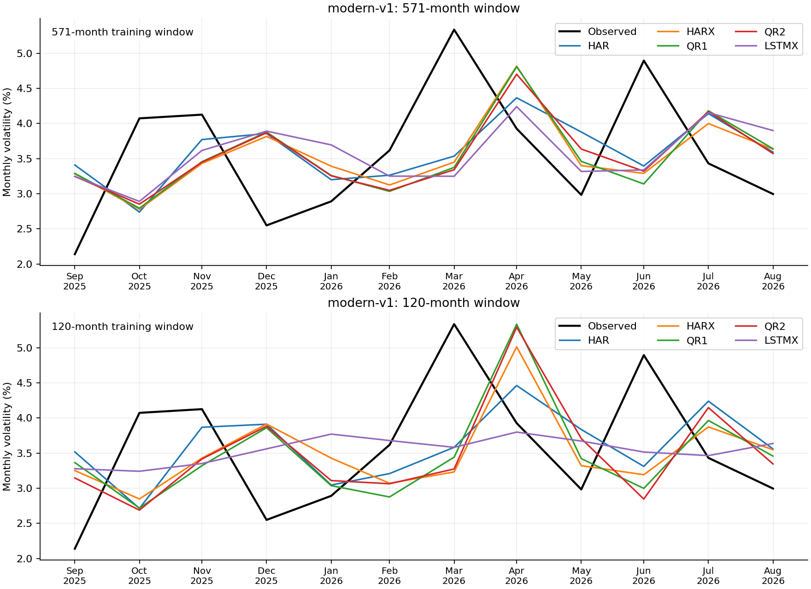
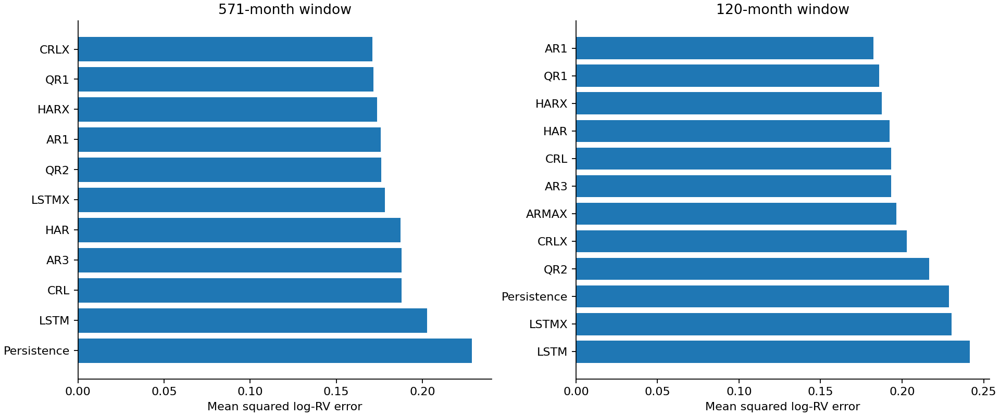

Evaluation: 2018-01-31–2026-08-31. All 7560 expected records validated, including unscored forecasts.
Successful scored records: 7486. Failed or unavailable records: 2 (see failures.csv and coverage.csv).
Tables average losses across seeds; seeds are not independent market histories. Rankings below include only complete models. Incomplete models have separate common-date comparisons.
| window | model | complete | successful_forecasts | mse_log_rv | rmse_log_rv | mae_log_rv | qlike_variance | mse_seed_std |
|---|---|---|---|---|---|---|---|---|
| 120 | AR1 | True | 104 | 0.18236 | 0.427036 | 0.326282 | 0.72663 | 0 |
| 120 | QR1 | True | 520 | 0.18587 | 0.431127 | 0.33053 | 0.667172 | 0.00257926 |
| 120 | HARX | True | 104 | 0.187691 | 0.433233 | 0.328874 | 0.671819 | 0 |
| 120 | HAR | True | 104 | 0.192466 | 0.438709 | 0.33334 | 0.821286 | 0 |
| 120 | CRL | True | 520 | 0.193196 | 0.43954 | 0.333962 | 0.79878 | 0.000108096 |
| 120 | AR3 | True | 104 | 0.193255 | 0.439608 | 0.333939 | 0.800531 | 0 |
| 120 | ARMAX | True | 104 | 0.196522 | 0.443308 | 0.347109 | 0.65481 | 0 |
| 120 | CRLX | True | 520 | 0.202915 | 0.450461 | 0.348296 | 0.757332 | 0.00678295 |
| 120 | QR2 | True | 520 | 0.216499 | 0.465295 | 0.355652 | 0.766599 | 0.00426827 |
| 120 | Persistence | True | 104 | 0.228674 | 0.478199 | 0.378301 | 0.718946 | 0 |
| 120 | LSTMX | True | 520 | 0.230279 | 0.479874 | 0.356291 | 1.17468 | 0.0017752 |
| 120 | LSTM | True | 520 | 0.241656 | 0.491586 | 0.366987 | 1.21302 | 0.0026659 |
| 571 | CRLX | True | 520 | 0.170985 | 0.413503 | 0.319831 | 0.609408 | 0.001523 |
| 571 | QR1 | True | 520 | 0.171392 | 0.413995 | 0.316781 | 0.595298 | 0.000509451 |
| 571 | HARX | True | 104 | 0.173748 | 0.416831 | 0.316407 | 0.651397 | 0 |
| 571 | AR1 | True | 104 | 0.175715 | 0.419184 | 0.325133 | 0.591646 | 0 |
| 571 | QR2 | True | 520 | 0.17602 | 0.419547 | 0.320737 | 0.632227 | 0.00205254 |
| 571 | ARMAX | False | 102 | 0.177364 | 0.421146 | 0.325174 | 0.621384 | 0 |
| 571 | LSTMX | True | 520 | 0.178195 | 0.422132 | 0.320938 | 0.672357 | 0.00510516 |
| 571 | HAR | True | 104 | 0.187128 | 0.432583 | 0.329459 | 0.726565 | 0 |
| 571 | AR3 | True | 104 | 0.187819 | 0.433381 | 0.330074 | 0.705361 | 0 |
| 571 | CRL | True | 520 | 0.187854 | 0.433421 | 0.329907 | 0.706445 | 7.64126e-05 |
| 571 | LSTM | True | 520 | 0.202591 | 0.450101 | 0.342583 | 0.821823 | 0.0034622 |
| 571 | Persistence | True | 104 | 0.228674 | 0.478199 | 0.378301 | 0.718946 | 0 |
571-month window: CRLX has the lowest complete-model MSE (0.170985).
120-month window: AR1 has the lowest complete-model MSE (0.182360).
| window | model | complete | successful_forecasts | mse_log_rv | rmse_log_rv | mae_log_rv | qlike_variance | mse_seed_std |
|---|---|---|---|---|---|---|---|---|
| 120 | LSTMX | True | 60 | 0.0676978 | 0.260188 | 0.22146 | 0.137647 | 0.00238802 |
| 120 | LSTM | True | 60 | 0.0692425 | 0.26314 | 0.229288 | 0.13845 | 0.00255252 |
| 120 | ARMAX | True | 12 | 0.0891341 | 0.298553 | 0.258405 | 0.201222 | 0 |
| 120 | HAR | True | 12 | 0.0901843 | 0.300307 | 0.260017 | 0.185482 | 0 |
| 120 | AR3 | True | 12 | 0.0917724 | 0.30294 | 0.269737 | 0.18717 | 0 |
| 120 | AR1 | True | 12 | 0.0919337 | 0.303206 | 0.261591 | 0.187918 | 0 |
| 120 | CRL | True | 60 | 0.091941 | 0.303218 | 0.270166 | 0.1873 | 0.000359381 |
| 120 | HARX | True | 12 | 0.0937944 | 0.306259 | 0.274559 | 0.2077 | 0 |
| 120 | QR1 | True | 60 | 0.103713 | 0.322045 | 0.285435 | 0.230462 | 0.00326719 |
| 120 | QR2 | True | 60 | 0.111472 | 0.333874 | 0.291007 | 0.261556 | 0.00657831 |
| 120 | CRLX | True | 60 | 0.116111 | 0.340751 | 0.299724 | 0.246606 | 0.00362449 |
| 120 | Persistence | True | 12 | 0.135859 | 0.368591 | 0.324979 | 0.313622 | 0 |
| 571 | HAR | True | 12 | 0.0855105 | 0.292422 | 0.25713 | 0.17724 | 0 |
| 571 | ARMAX | True | 12 | 0.0855635 | 0.292512 | 0.25723 | 0.18467 | 0 |
| 571 | HARX | True | 12 | 0.0867294 | 0.294499 | 0.268247 | 0.186679 | 0 |
| 571 | CRL | True | 60 | 0.0873286 | 0.295514 | 0.268639 | 0.183818 | 0.000366397 |
| 571 | AR3 | True | 12 | 0.087668 | 0.296088 | 0.26927 | 0.1843 | 0 |
| 571 | QR2 | True | 60 | 0.0889074 | 0.298174 | 0.271903 | 0.191935 | 0.00255742 |
| 571 | LSTM | True | 60 | 0.088918 | 0.298191 | 0.26818 | 0.188307 | 0.00930484 |
| 571 | LSTMX | True | 60 | 0.0914166 | 0.302352 | 0.265142 | 0.19744 | 0.00632756 |
| 571 | QR1 | True | 60 | 0.0942386 | 0.306983 | 0.278724 | 0.206549 | 0.00227139 |
| 571 | AR1 | True | 12 | 0.0976567 | 0.312501 | 0.27024 | 0.195617 | 0 |
| 571 | CRLX | True | 60 | 0.100462 | 0.316957 | 0.288162 | 0.212758 | 0.00533795 |
| 571 | Persistence | True | 12 | 0.135859 | 0.368591 | 0.324979 | 0.313622 | 0 |
571-month window: HAR has the lowest complete-model MSE (0.085511).
120-month window: LSTMX has the lowest complete-model MSE (0.067698).


MCS uses 10,000 stationary-bootstrap replications, expected block length six months, seed 0 and familywise size 0.05. HAR loss-difference intervals use paired date resampling of seed-averaged losses. Unadjusted pairwise intervals do not establish familywise superiority. A p-value of one is not proof of a unique winner.
| model | mcs_pvalue | window | loss | scope | months |
|---|---|---|---|---|---|
| Persistence | 0.0109 | 571 | mse_log_rv | complete_period | 104 |
| LSTM | 0.1255 | 571 | mse_log_rv | complete_period | 104 |
| HAR | 0.3614 | 571 | mse_log_rv | complete_period | 104 |
| AR3 | 0.4817 | 571 | mse_log_rv | complete_period | 104 |
| CRL | 0.4817 | 571 | mse_log_rv | complete_period | 104 |
| QR2 | 0.6837 | 571 | mse_log_rv | complete_period | 104 |
| LSTMX | 0.6837 | 571 | mse_log_rv | complete_period | 104 |
| HARX | 0.9421 | 571 | mse_log_rv | complete_period | 104 |
| AR1 | 0.9421 | 571 | mse_log_rv | complete_period | 104 |
| QR1 | 0.9421 | 571 | mse_log_rv | complete_period | 104 |
| CRLX | 1 | 571 | mse_log_rv | complete_period | 104 |
| Persistence | 0.0161 | 571 | mse_log_rv | all_model_common_dates | 102 |
| LSTM | 0.1269 | 571 | mse_log_rv | all_model_common_dates | 102 |
| HAR | 0.3132 | 571 | mse_log_rv | all_model_common_dates | 102 |
| AR3 | 0.4724 | 571 | mse_log_rv | all_model_common_dates | 102 |
| CRL | 0.4724 | 571 | mse_log_rv | all_model_common_dates | 102 |
| ARMAX | 0.6106 | 571 | mse_log_rv | all_model_common_dates | 102 |
| QR2 | 0.6106 | 571 | mse_log_rv | all_model_common_dates | 102 |
| LSTMX | 0.6106 | 571 | mse_log_rv | all_model_common_dates | 102 |
| HARX | 0.8977 | 571 | mse_log_rv | all_model_common_dates | 102 |
| AR1 | 0.8977 | 571 | mse_log_rv | all_model_common_dates | 102 |
| QR1 | 0.9929 | 571 | mse_log_rv | all_model_common_dates | 102 |
| CRLX | 1 | 571 | mse_log_rv | all_model_common_dates | 102 |
| LSTM | 0.6327 | 571 | qlike_variance | complete_period | 104 |
| LSTMX | 0.6937 | 571 | qlike_variance | complete_period | 104 |
| AR3 | 0.7199 | 571 | qlike_variance | complete_period | 104 |
| Persistence | 0.7199 | 571 | qlike_variance | complete_period | 104 |
| CRL | 0.7199 | 571 | qlike_variance | complete_period | 104 |
| HAR | 0.7199 | 571 | qlike_variance | complete_period | 104 |
| QR2 | 0.7199 | 571 | qlike_variance | complete_period | 104 |
| HARX | 0.7199 | 571 | qlike_variance | complete_period | 104 |
| CRLX | 0.7199 | 571 | qlike_variance | complete_period | 104 |
| QR1 | 0.9423 | 571 | qlike_variance | complete_period | 104 |
| AR1 | 1 | 571 | qlike_variance | complete_period | 104 |
| ARMAX | 0.6828 | 571 | qlike_variance | all_model_common_dates | 102 |
| LSTM | 0.6828 | 571 | qlike_variance | all_model_common_dates | 102 |
| LSTMX | 0.6828 | 571 | qlike_variance | all_model_common_dates | 102 |
| AR3 | 0.7263 | 571 | qlike_variance | all_model_common_dates | 102 |
| CRL | 0.7263 | 571 | qlike_variance | all_model_common_dates | 102 |
| HAR | 0.7263 | 571 | qlike_variance | all_model_common_dates | 102 |
| Persistence | 0.7263 | 571 | qlike_variance | all_model_common_dates | 102 |
| QR2 | 0.7263 | 571 | qlike_variance | all_model_common_dates | 102 |
| HARX | 0.7263 | 571 | qlike_variance | all_model_common_dates | 102 |
| CRLX | 0.7263 | 571 | qlike_variance | all_model_common_dates | 102 |
| QR1 | 0.9954 | 571 | qlike_variance | all_model_common_dates | 102 |
| AR1 | 1 | 571 | qlike_variance | all_model_common_dates | 102 |
| QR2 | 0.1503 | 120 | mse_log_rv | complete_period | 104 |
| CRLX | 0.1503 | 120 | mse_log_rv | complete_period | 104 |
| LSTM | 0.1944 | 120 | mse_log_rv | complete_period | 104 |
| Persistence | 0.2824 | 120 | mse_log_rv | complete_period | 104 |
| LSTMX | 0.2824 | 120 | mse_log_rv | complete_period | 104 |
| AR3 | 0.7634 | 120 | mse_log_rv | complete_period | 104 |
| CRL | 0.7634 | 120 | mse_log_rv | complete_period | 104 |
| HAR | 0.7634 | 120 | mse_log_rv | complete_period | 104 |
| ARMAX | 0.7634 | 120 | mse_log_rv | complete_period | 104 |
| HARX | 0.9187 | 120 | mse_log_rv | complete_period | 104 |
| QR1 | 0.9187 | 120 | mse_log_rv | complete_period | 104 |
| AR1 | 1 | 120 | mse_log_rv | complete_period | 104 |
| QR2 | 0.1503 | 120 | mse_log_rv | all_model_common_dates | 104 |
| CRLX | 0.1503 | 120 | mse_log_rv | all_model_common_dates | 104 |
| LSTM | 0.1944 | 120 | mse_log_rv | all_model_common_dates | 104 |
| Persistence | 0.2824 | 120 | mse_log_rv | all_model_common_dates | 104 |
| LSTMX | 0.2824 | 120 | mse_log_rv | all_model_common_dates | 104 |
| AR3 | 0.7634 | 120 | mse_log_rv | all_model_common_dates | 104 |
| CRL | 0.7634 | 120 | mse_log_rv | all_model_common_dates | 104 |
| HAR | 0.7634 | 120 | mse_log_rv | all_model_common_dates | 104 |
| ARMAX | 0.7634 | 120 | mse_log_rv | all_model_common_dates | 104 |
| HARX | 0.9187 | 120 | mse_log_rv | all_model_common_dates | 104 |
| QR1 | 0.9187 | 120 | mse_log_rv | all_model_common_dates | 104 |
| AR1 | 1 | 120 | mse_log_rv | all_model_common_dates | 104 |
| QR2 | 0.1043 | 120 | qlike_variance | complete_period | 104 |
| CRLX | 0.1249 | 120 | qlike_variance | complete_period | 104 |
| LSTMX | 0.366 | 120 | qlike_variance | complete_period | 104 |
| LSTM | 0.3981 | 120 | qlike_variance | complete_period | 104 |
| AR3 | 0.4958 | 120 | qlike_variance | complete_period | 104 |
| CRL | 0.4971 | 120 | qlike_variance | complete_period | 104 |
| HAR | 0.5952 | 120 | qlike_variance | complete_period | 104 |
| Persistence | 0.9586 | 120 | qlike_variance | complete_period | 104 |
| AR1 | 0.9586 | 120 | qlike_variance | complete_period | 104 |
| QR1 | 0.9586 | 120 | qlike_variance | complete_period | 104 |
| HARX | 0.9586 | 120 | qlike_variance | complete_period | 104 |
| ARMAX | 1 | 120 | qlike_variance | complete_period | 104 |
| QR2 | 0.1043 | 120 | qlike_variance | all_model_common_dates | 104 |
| CRLX | 0.1249 | 120 | qlike_variance | all_model_common_dates | 104 |
| LSTMX | 0.366 | 120 | qlike_variance | all_model_common_dates | 104 |
| LSTM | 0.3981 | 120 | qlike_variance | all_model_common_dates | 104 |
| AR3 | 0.4958 | 120 | qlike_variance | all_model_common_dates | 104 |
| CRL | 0.4971 | 120 | qlike_variance | all_model_common_dates | 104 |
| HAR | 0.5952 | 120 | qlike_variance | all_model_common_dates | 104 |
| Persistence | 0.9586 | 120 | qlike_variance | all_model_common_dates | 104 |
| AR1 | 0.9586 | 120 | qlike_variance | all_model_common_dates | 104 |
| QR1 | 0.9586 | 120 | qlike_variance | all_model_common_dates | 104 |
| HARX | 0.9586 | 120 | qlike_variance | all_model_common_dates | 104 |
| ARMAX | 1 | 120 | qlike_variance | all_model_common_dates | 104 |
Modern price-feature extension: seven causal price-derived inputs; scaling calibrated through 2017 and frozen, input clipping retained and targets never clipped. QR1/QR2 share inputs. This is a separate retrospective price-derived benchmark, not the paper macro feature specification. Raw daily snapshot hashes are verified before training.
This run uses rolling windows [571, 120] and stochastic seeds [0, 1, 2, 3, 4]. The month following 2026-08-31 is unscored. Quantum results use ideal exact simulation, not hardware or trading returns. Numerical failures are retained without substituting forecasts. No window or model is selected for deployment using these results.
python run_study.py report --run results/modern-2026-09-24
See manifest.json for identity, inputs, source hashes and environment. See RUN_ORDER.md and docs-dataset/AUDIT.md for preparation and source limitations.